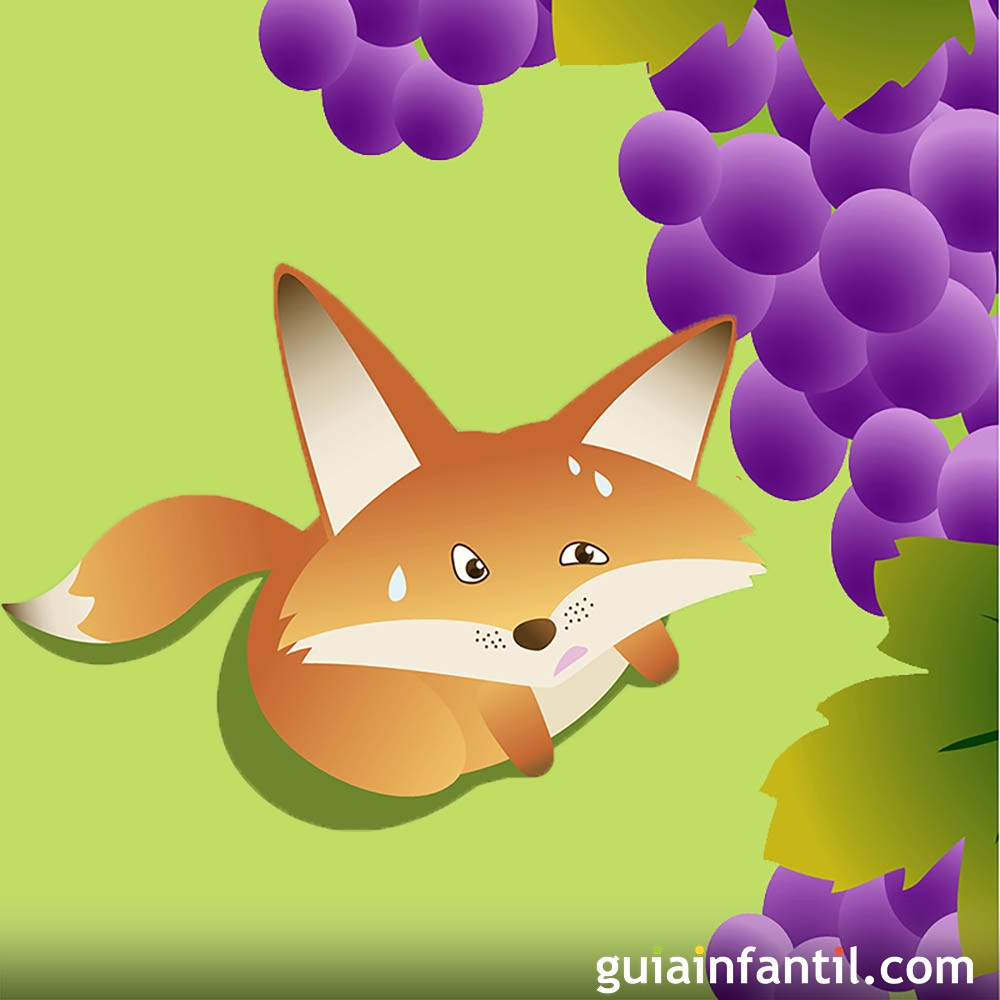

Una zorra hambrienta vio unos hermosos racimos de uvas maduras
colgando de una parra. Deseosa de comerlos, intentó alcanzarlos
saltando una y otra vez, pero las uvas estaban demasiado altas y
no logró llegar a ellas.
Al ver que no podía conseguirlas, se alejó diciendo con desdén:
—Estas uvas no están maduras; están verdes.